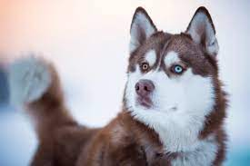

Amante das temperaturas negativas, O Husky siberiano está entre as raças mais independentes. O Brasil é um país tropical. Apesar da sua imensa expansão, em quase todo o seu território, o calor e as altas temperaturas predominam. Essa, talvez, seja a explicação da pouca popularidade do Husky Siberiano por aqui, um cãozinho com origem no extremo nordeste da Ásia e que adora temperaturas negativas. Criados para o trabalho, esses cachorros têm toda a aparência dos lobos selvagens, mas engana-se quem pensa que eles são agressivos. Extremamente amigáveis, os Huskys são fáceis de lidar e adoram companhia — do tutor, ou de outros cãezinhos.
Os Huskys não são do tipo preguiçosos. A condição física é uma das virtudes desses pets. Portanto, não imagine que o cachorro ficará no seu colo por horas e horas, o negócio desta raça é praticar exercícios físicos. Para não cansar durante as suas atividades, o Husky Siberiano consegue controlar o seu metabolismo. Ele poupa as suas reservas de gordura e, assim, não fica fatigado e concentra sua atenção no trabalho.
Apesar de ser uma raça de cachorro que pode ser muito independente, o Husky, como já dissemos, também adora companhia. Para o tutor, a socialização do pet fica muito mais fácil, já que esses animais — acostumados a conviver em rebanho — se dão bem com adultos, crianças e outros cachorros. No entanto, por ter origem de caçadores, os Huskys adoram caçar gatos e pássaros. Então, caso tenha felinos em casa, e queira um cãozinho da raça, procure educar o seu pet para que ele consiga se socializar tranquilamente com os bichanos.
Fizemos um gráfico nivelando de 0 a 5 as características da raça, veja a baixo!
Ignorem o olhar sério e com aspecto de bravo do Husky Siberiano. Por trás da fisionomia deles, os cãezinhos são amigáveis, brincalhões e totalmente família. Com o porte robusto, os pets possuem o rosto arredondado e as orelhas eretas, curtas e pontudas. Os olhos podem ser azuis, castanhos ou um de cada cor (heterocromia). A paleta de cores dos pelos é a mais variada: vai do preto ao branco puro. Por ser uma raça específica para a vida na neve, as patas possuem pelos entre os dedos para proteger a sola. A cauda se mantém em pé quando o cão está atento e abaixa quando ele está em descanso ou em trabalho.
Como já dissemos, Huskys estão entre os cachorros mais independentes do mundo. E outra característica desses pets é a limpeza. Eles dificilmente ficam com forte odor e preferem se limpar sozinhos — dispensando banhos convencionais. Porém, caso o seu companheiro se suje em alguma aventura com poças de lama, entre outras brincadeiras, o banho será a solução. Nesse momento, certifique-se de utilizar produtos específicos para cachorros. Aqui, na Petz, você encontra os melhores itens de higiene animal com preços imperdíveis. Assim como nós, nossos cãezinhos estão vulneráveis a diversos problemas de saúde durante a vida. Sejam eles problemas de fácil tratamento, como o combate a parasitas, ou mais complexos, como doenças crônicas. Quando falamos dos Huskys Siberianos, eles são pets extremamente saudáveis. A principal recomendação médica é realizar diariamente as atividades físicas que o cãozinho exige, assim, ele se manterá saudável e terá uma vida mais longa.
A sua cadela está prenha ou está pensando em adotar um filhote de Husky Siberiano? Alguns cuidados são importantes para que a adaptação do pet no ambiente seja feita de forma adequada e segura. Portanto, lembre-se de realizar todas as vacinas do cãozinho e escolha alimentos específicos para a idade dele. Além disso, procure iniciar a educação do seu Husky desde novinho, para que ele cresça e tenha uma socialização cada vez maior.